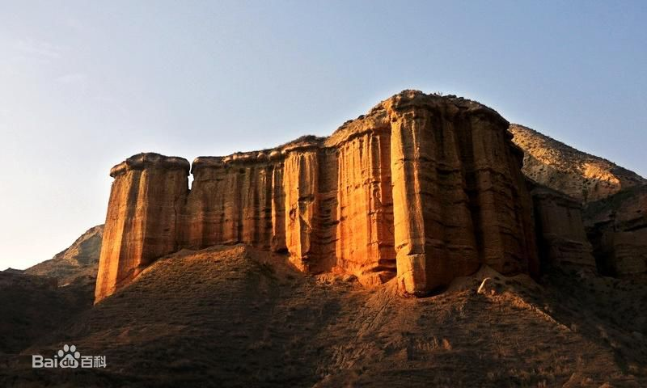

天斧沙宫
这是兰州市最独特的自然景观，位于市安宁区桃花园仁寿山东面的龙风峡里，是一处距今约2500万年的红色砂岩，经过长期的风化水蚀而形成的一组类丹霞地貌奇观。因成自天然，如神斧凿成的沙宫宫殿而得名。
驱车来到仁寿山下，离开公路北行1.5公里，即到龙风峡。这是一条路曲而平的沙沟，沿沟4~5公里面，迷人的丹霞地貌奇景布列两旁，宛如结构严谨、形体壮丽、建筑精美、布局和谐的建筑群，虽自无工却宛如人开
早在清光绪18年（公元1891年）10月11日，地理学家陶保廉考察过这里后，在《辛卯侍行记》中有了这一奇特地貌景面的较早记载。西北师范大家地理系教授黄可光先生根据其地层结构和形态特征，称之为“类丹霞地貌”这是兰州市最独特的自然景观，位于市安宁区桃花园仁寿山东面的龙风峡里，是一处距今约2500万年的红色砂岩，经过长期的风化水蚀而形成的一组类丹霞地貌奇观。因成自天然，如神斧凿成的沙宫宫殿而得名。
驱车来到仁寿山下，离开公路北行1.5公里，即到龙风峡。这是一条路曲而平的沙沟，沿沟4~5公里面，迷人的丹霞地貌奇景布列两旁，宛如结构严谨、形体壮丽、建筑精美、布局和谐的建筑群
早在清光绪18年（公元1891年）10月11日，地理学家陶保廉考察过这里后，在《辛卯侍行记》中有了这一奇特地貌景面的较早记载。西北师范大家地理系教授黄可光先生根据其地层结构和形态特征，称之为“类丹霞地貌”
